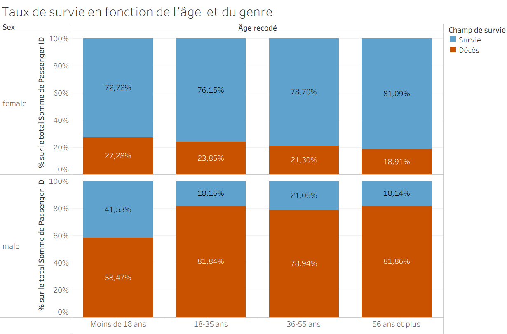

Collecte et analyse de données issues des réseaux sociaux : Stage au sein du projet AMULEX.
- 1. Objectif du stage et du projet
- 2. Présentation des données
- 3. Nettoyage et préparation des données
- 4. Stratégies de collecte
- 5.1 Statistiques descriptives
- 5.2 Analyse des Correspondances Multiples (ACM)
- 5.3 Analyse en Classes Latentes (ACL)
- 5.4 Analyse de corrélation
- 6. Conclusion
- 7. Compétences développées
1. Objectif du projet

Ce projet a été réalisée dans le cadre d'un Datathon que j'ai organisé durant la semaine du 08/12/2025.
L’objectif principal était de monter en compétence sur des outils de Business Intelligence et d'analyse de données, notamment SQL pour la gestion et l'exploration, ainsi que Tableau pour la conception de visualisations professionnelles.
L'étude se concentre sur les facteurs ayant influencé la survie des passagers du Titanic afin d'identifier précisément les profils les plus à risque.
Objectifs d'apprentissage :
- 🔹 SQL : Gestion, exploration et analyse approfondie des données.
- 🔹 Tableau : Conception de visualisations dynamiques et professionnelles.
2. Présentation des données
L'étude repose sur la base de données passengers (tiré du jeu de données Titanic), regroupant des informations sur 714 passagers. Ces données ont été extraites et explorées à l'aide de SQL afin de structurer les variables clés nécessaires à l'analyse de survie et à la création de visualisations sous Tableau.
Le jeu de données se décompose en plusieurs catégories de variables essentielles :
- Identité et profil (individus) :
Name,SexetAge. - Statut socio-économique :
Pclass(classe de 1 à 3) etFare(prix du billet). Ces données permetttent de mesurer l'influence de la richesse sur les chances de survie. - Structure familiale :
SibSp(frères, sœurs, époux) etParch(parents, enfants). Ces variables ont été fusionnées avec SQL pour créer l'indicateur "Statut de voyage" (Seul.e vs En famille). - Port d'embarquement :
Embarked(port d'embarquement). - Survie :
Survivedest l'indicateur binaire de survie.
Chaque variable a été exploitée pour comprendre la corrélation entre le statut social et les chances de survie.
3. Nettoyage et préparation des données
Le nettoyage et la structuration des données ont été intégralement réalisés en SQL. Cette étape de Data Preparation a été cruciale pour transformer la base brute en un jeu de données exploitable pour l'analyse statistique et la
visualisation. Pour affiner l'analyse, j'ai créé de nouvelles dimensions via des instructions CASE WHEN :
- Statut de voyage : Regroupement des passagers en catégories 'Seul.e' ou 'En famille' en calculant la somme des proches à bord
WHEN (SibSp + Parch) = 0 THEN 'Seul' ELSE 'En famille'. - Segmentation démographique : Création de tranches d'âge (ex: 'Moins de 18 ans', '18-35 ans', etc.).
- Segmentation tarifaire : Définition de catégories de billets (Bas, Milieu et Haut de gamme) basée sur le calcul des quartiles (Q1=8.05, Q3=33.0) pour isoler l'impact du niveau de richesse.
4. Résultats de l'analyse
L'analyse des données révèle que la survie sur le Titanic est le résultat d'une hiérarchie complexe mêlant éthique, richesse et structure familiale.
"Les femmes et les enfants d'abord !"

Le premier niveau de survie repose sur la règle "Les femmes et les enfants d'abord !". Le croisement âge et genre révèle des contrastes très marqués.
- ✅ Le profil le moins à risque : Les femmes ont un taux de survie très élevé avec un taux de 76,37% de survie.
- ❌ Le profil le plus à risque : Le risque de mortalité est concentré sur les hommes avec un taux de (21,91% de survie).
- 👶 Priorité à la jeunesse : Les passagers de moins de 18 ans ont bénéficié d'une plus grande protection que les plus âgés.

{kind=link}
Cependant, le taux de survie des femmes progresse avec les années, passant de 72,72 % pour les moins de 18 ans à 81,1% pour les plus de 56 ans.
Dès 18 ans, la survie masculine s'effondre et stagne autour de 18%. La tranche 18-35 ans est la plus durement touchée, montrant que les hommes adultes ont été les principaux sacrifiés lors des opérations de sauvetage.
Le genre reste le facteur prédominant, mais l'âge a agi comme un multiplicateur de chance pour les femmes et un facteur d'exclusion radical pour les hommes dès l'entrée dans l'âge adulte.
5.2 Influence du statut socio-économique
Au-delà du genre et de l’âge, l’analyse démontre que le statut financier agissait comme un filtre déterminant, de l'embarquement jusqu'à l'accès aux canots de sauvetage.
Accès prioritaire et proximité des ponts supérieurs.
Éloignement des secours et barrières linguistiques/sociales.

Le tarif face à l’âge : L'analyse des segments tarifaires affine cette observation. Pour le segment « Bas de gamme » (ligne verte), le taux de mortalité augmente de façon exponentielle avec l'âge. Plus un passager modeste était âgé, plus sa vulnérabilité était grande.
À l'inverse, le « privilège du prix » est flagrant : à âge égal, un passager du segment « Haut de gamme » (ligne bleue) conservait un taux de mortalité nettement inférieur, illustrant un accès facilité aux dispositifs de sauvetage.
 Le port d'embarquement (Cherbourg) : Les passagers ayant embarqué à Cherbourg affichent le taux de survie le plus élevé (60 %). Cette statistique est un indicateur indirect de richesse : les requêtes SQL confirment que ce port a accueilli une proportion significativement plus élevée de passagers de 1ère et 2ème classe.
Le port d'embarquement (Cherbourg) : Les passagers ayant embarqué à Cherbourg affichent le taux de survie le plus élevé (60 %). Cette statistique est un indicateur indirect de richesse : les requêtes SQL confirment que ce port a accueilli une proportion significativement plus élevée de passagers de 1ère et 2ème classe.
5.3 Influence du statut de voyage

Le destin des passagers a également été marqué par leur environnement social immédiat.
Solidarité familiale : Les passagers voyageant « En famille » ont un taux de survie de 51 %, contre seulement 32 % pour les passagers voyageant seuls. Cette différence de 19 points souligne l’importance du groupe familial dans la réactivité et l’entraide lors de l’évacuation d'urgence.
6. Conclusion
-
Apports scientifiques et interprétation
Les analyses menées dans le cadre du projet AMULEX corroborent et enrichissent les travaux sociologiques majeurs sur la diversification des usages numériques (Pacouret et al., 2024 ; Neihouser et al., 2022).
L'Analyse en Classes Latentes (ACL) a permis d'établir une typologie claire des utilisateurs, révélant notamment l'existence d'un petit groupe multiplateforme très actif, jeune, diplômé et politiquement engagé à gauche. L'ACM et les corrélations ont quant à elles démontré l'existence d'« écosystèmes d'usages » distincts : l'association forte entre Snapchat et TikTok (public jeune) d'un côté, et celle entre YouTube et Twitch (public vidéo assidu) de l'autre. Ces résultats confirment que les pratiques numériques sont le reflet direct de variables sociodémographiques.
-
Nuances et limites du projet
L'étude a fait face à plusieurs limites : un biais de recrutement ayant surreprésenté les profils très actifs et des contraintes techniques liés aux plateformes (Instagram, YouTube) qui ont orienté les choix méthodologiques.
-
Bilan du stage
Ce stage a été une transition concrète de la théorie à la pratique. Malgré les obstacles, mon travail de conception et de traitement a permis de créer une base de données solide pour le projet. Cette expérience a confirmé mon intérêt pour l'analyse de données sociologiques et m'a appris l'importance de la flexibilité face aux imprévus.
7. Compétences développées
- Compétences analytiques : Expertise dans l'application de l'ACL, l'ACM et des corrélations pour structurer et interpréter des données sociologiques complexes.
- Maîtrise de R : Conception d'un script R fonctionnel pour l'ACM.
- Maîtrise de Jamovi : Utilisation de Jamovi pour les statistiques descriptives, l'ACL et l'analyse de corrélation.
- Gestion de données complexes et structuration de BDD : Traitement et nettoyage de données qualitatives et quantitatives pour garantir la solidité et la pérennité de la base de données du projet AMULEX.
- Conception et adaptation de protocoles de collecte : Élaboration d'une stratégie de recrutement spécifique à YouTube et ajustement des méthodes face aux contraintes techniques des plateformes.
- Interprétation sociologique : Capacité à mettre en perspective les résultats statistiques avec les travaux théoriques pour enrichir les conclusions de l'étude.